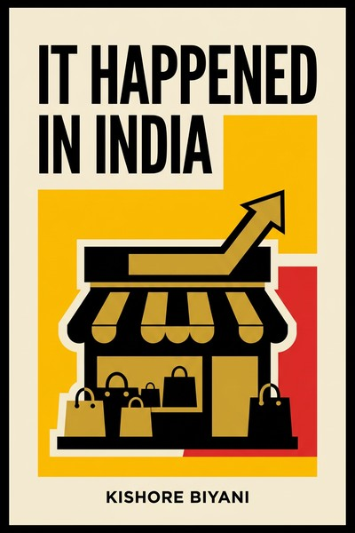

Library › Business & Startups
It Happened in India — Summary & Key Lessons

The man who built Big Bazaar on chaos, crowds and the mela instinct, and proved Indian retail did not need to copy Walmart.
📖 OPEN THE FULL INTERACTIVE BREAKDOWN →🌐 Read it in Hindi, Hinglish, Gujarati, Tamil & 22 more languages — free, with audio.
💡 The Big Idea
Biyani's thesis is that India's consumption code is the mela: Indians enjoy chaos, bargaining, crowds and festival energy, and modern retail failed for years because it imported clinical Western formats. Big Bazaar's genius was embracing the noise (announcements, crowds, mela-like layouts, sabzi bazaar sections inside the store) so shoppers felt at home instead of intimidated. The book covers his early failures (a restaurant that flopped, losses in the denim trade), the Pantaloons launch, the KB's Fair Price value format, Central as a brand mall, and his management creed: hire for India-instinct over MBAs, trust the everyday consumer, and keep businesses in-house rather than lease them out. Written in 2007 at his peak, it reads differently today: the linked case study is what happened to the empire he built.
🧠 The 8 Key Lessons
Lesson 1: Design for the Customer's Culture, Not Your Training
The Mela Instinct
Biyani's core discovery: modern retail kept failing in India because it fought the culture (quiet aisles, fixed prices, imported formats) while Indians treat shopping as festival. Big Bazaar flipped every imported rule: chaos became energy, announcements became atmosphere, bargaining energy was absorbed through deals and Wednesday bazaars. The general lesson: winning formats are designed around the customer's cultural defaults, not the founder's aesthetic.
📖 Example: Big Bazaar's sabzi mandi-style entrance (loose vegetables at the front, noise, crates) was deliberate: it signaled 'this is YOUR market', and footfall followed from shoppers who felt malls were not built for them. Read the full example →
⚡ Do this: List one 'imported best practice' your industry follows that quietly fights your customer's habits. Test the opposite on a small scale this quarter.
Lesson 2: Anthropology Beats MBA: Watch the Street
Learning from Mumbai's Markets
Biyani credits observation of Indian bazaars (how women touch fabric, how families shop together, how trust is built through familiarity) over formal research. His teams were filled with non-MBA 'India people' who understood street logic. The discipline: your market research is worthless until it explains why your customer enjoys what she enjoys.
📖 Example: Pantaloons' early insight (Indian women wanted fashion but felt judged in western-style stores) came from watching shoppers walk out empty-handed because the staff's body language felt exclusive, a data point no survey captured. Read the full example →
⚡ Do this: Spend three hours this month silently observing your customers in their natural environment (store, street, app scroll). Write the three behaviors your current model punishes.
Lesson 3: Fail Small, Learn Loud
Topsy-Turvy and the Denim Years
Before Pantaloons, Biyani lost money in the wholesale denim trade and ran a restaurant (Topsy-Turvy) that flopped. The failures taught him inventory intuition and customer psychology at the cost of pocket change compared to what retail would demand later. The pattern: treat early ventures as tuition, and extract written lessons while the wound is fresh.
📖 Example: The denim trade collapse taught him demand-guessing kills; the restaurant taught him experience design. Both lessons appear as operating rules inside Big Bazaar a decade later (never overstock fashion, always sell an experience). Read the full example →
⚡ Do this: If your last venture failed, write the two operating rules it taught you and pin them where you plan your next venture. Tuition paid twice is a choice.
Lesson 4: Own the Experience End to End
Central and the Brand Mall
Central (launched 2004) was Biyani's answer to leased department stores: instead of renting space to brands, Future owned the inventory, the staff and the experience, monetizing brands through a revenue-share model while controlling the customer journey. His stated principle: leasing out is renting away your learning. Control of experience is the moat in experience businesses.
📖 Example: In Central, every floor's mix, music and service was Future's call; brands got traffic and data, Future got margin and compounding learning about what Indians buy, knowledge that pure landlords never accumulate. Read the full example →
⚡ Do this: Audit which parts of your customer experience are actually run by someone else. Take back the one touchpoint that shapes perception most.
Lesson 5: Trust Beats Process at the Start
The KB Way
Biyani ran his companies on trust and instinct with thin process: hires were judged on India-instinct, decisions moved fast, and field people had real authority. It produced speed and loyalty in the growth years (and, the linked case study shows, fragility later). The honest lesson: trust-heavy cultures out-execute in greenfields and under-govern at scale; plan the process upgrade before scale forces it.
📖 Example: Store managers at Big Bazaar could reprice, re-layout and re-promote locally in the early years, which made stores feel local; the same freedom without systems became a governance headache as the chain crossed hundreds of stores. Read the full example →
⚡ Do this: Write down which decisions in your company run on trust today. Add one lightweight system (a weekly report, a simple approval cap) that protects the trust instead of replacing it.
Lesson 6: Price for the First-Time Buyer
KB's Fair Price
KB's Fair Price (value format) targeted the family stepping into organized retail for the first time: no-frills stores, lowest prices, staples-heavy assortment. The insight: India's consumption revolution would be won at the entry rung, not the premium rung. Volume at honest prices built the trust that premium formats later harvested.
📖 Example: Fair Price stores stripped services to the bone and beat loose-market prices on staples, converting grocery savings into trust that pulled the same families into Big Bazaar's fashion and furniture. Read the full example →
⚡ Do this: Design one entry-rung offer so honest it feels risky. First-time buyers acquired at breakeven become the trust base your premium line sells to later.
Lesson 7: Ride the Swadeshi Emotional Wave
Indian by Choice
Biyani's branding rode a rising Indian self-confidence (his ads celebrated the Indian housewife's smartness, not aspiration to the West). As liberalization matured, the emotional premium shifted from foreign to Indian. The lesson: track your customer's identity direction; brands aligned with where identity is GOING get free emotional tailwind.
📖 Example: Big Bazaar's 'India ka' positioning and sale-day festivals (Sabse Sasta Din) borrowed from India's own cultural calendar rather than Black Friday imports, and the sales broke records because the excitement was native. Read the full example →
⚡ Do this: Ask: is your brand's emotional register pointed at where your customer's identity is heading, or where it was? Shift one campaign to native pride and measure the difference.
Lesson 8: Even Instinct Empires Need Governance
The View from 2007 (and After)
The book ends at Biyani's peak; the epilogue belongs to the linked case study: debt, the Amazon-Future legal war, and the 2022 handing of retail assets to Reliance. The builder's lesson: instincts and culture win decades, but leverage and legal strategy can end one; the governance muscle (debt discipline, documentation, succession) is the part of the empire no mela instinct can replace.
📖 Example: The same group that read India better than anyone was undone by borrowings and litigation in its second decade; the case file shows how value creation and value capture are different sports. Read the full example →
⚡ Do this: Whatever your growth stage, write your debt ceiling and your legal documentation standards down now, at your calmest, and treat them as non-negotiable later.
✅ 5-Step Action Plan
- Test one opposite of an imported industry best practice on a small scale this quarter.
- Observe customers in their natural environment monthly; log behaviors your model punishes.
- Write the two operating rules your last failure taught you and apply them now.
- Take back ownership of the customer touchpoint that shapes perception most.
- Set a written debt ceiling and documentation standard while times are calm.
⚠️ When This Doesn't Work
This is Biyani's memoir, written in 2007 when Future Group was ascending: it is celebratory by nature and silent on what came after (debt, the Amazon dispute, the Reliance Retail deal of 2022, covered in our linked case study). Claims about formats and numbers are founder-told. Read the book for the cultural playbook of Indian retail and read the case study for the governance lesson the book could not yet contain.
💀 The Graveyard Proves It
🛒 Future Group — Kishore Biyani's Retail Empire — India's Retail King, Bankrupt. Burn: ₹29,000 crore in debt; Big Bazaar sold in a fire sale. Read the full case study →
💬 Best Quotes from It Happened in India
- “Indians thrive in chaos. The mela is our natural market.”
- “We did not want to copy Walmart. We wanted to build the Indian way.”
- “Leasing out is renting away your learning.”
Interactive version: mark lessons as read, listen in your language, share quote cards.